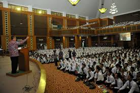

Kenapa pilih UIN Jakarta
Ditulis pada hari Senin, 28 September 2020
1. PT AI Terbaik Se-Indonesia
Tahukah teman-teman jika UIN Syarif Hidayatullah atau yang lebih familiar disebut sebagai UIN Jakarta ini menempati peringkat 6 universitas di Indonesia versi Google Scholar Citations Juli 2016. Selain itu juga UIN Jakarta berada di ranking pertama perguruan tinggi Islam di Indonesia. Pada April 2016 lalu UIN Jakarta menjadi perguruan tinggi Islam pertama di Indonesia yang mendapatkan sertifikasi ASEAN University Network-Quality Assurance (AUN-QA). Sejak Mei 2013 juga UIN Jakarta memperoleh akreditasi A dari Badan Akreditasi Nasional Perguruan Tinggi (BAN-PT).
2. Lokasi yang Strategis di 'Pinggir' Ibukota
Meski mengusung nama UIN Jakarta, namun secara geografis UIN Jakarta termasuk dalam wilayah Tangerang Selatan. Kepadatan ibukota mungkin menjadi alasan lain kenapa siswa-siswi dari seluruh Indonesia memilih untuk berkuliah di UIN Jakarta. Namun secara fasilitas UIN Jakarta tidaklah tertinggal dan bahkan secara budaya pun tak jauh berbeda dengan kampus-kampus yang terletak di ibukota.
3. Fasilitas Kampus Lengkap dan Menunjang
Selain gedungnya yang ‘wah’ dengan nuansa ketimuran serta prestasinya yang patut diacungi jempol, UIN Jakarta juga memiliki fasilitas yang mentereng seperti Perpustakaan Pusat yang futuristik, terdiri dari tujuh lantai dengan dilengkapi buku-buku umum, buku-buku Islam, kumpulan skripsi, tesis, disertasi dan jurnal-jurnal ilmiah serta buku-buku online terlengkap. Pelayanannya yang baik dan canggih juga membuat mahasiswa nyaman untuk belajar di Perpustakaan Pusat. Selain itu di tiap fakultas juga dilengkapi dengan Perpustakaan Fakultas dan gedung khusus Perpustakaan Pascasarjana.
Ada Pusat Laboratorium Terpadu yang tak hanya digunakan untuk penelitian sains dan sosial, namun juga digunakan untuk penelitian agama. Ada Laboratorium Bahasa dan Language Center yang rutin mengadakan pelatihan kebahasaan serta tes TOEFL dan TOAFL di tiap tahunnya. Student Center menjadi pusat Unit Kegiatan Mahasiswa (UKM), dilengkapi pula dengan stadion mini dan Masjid Al- Jamiah. Selain itu masih ada Masjid Fathullah dan Rumah Sakit Syarif Hidayatullah yang memberikan potongan harga bagi mahasiswa dan sivitas akademika lainnya.
Auditorium Harun Nasution digunakan untuk tempat menyelenggarakan kegiatan-kegiatan besar seperti seminar, konser, hingga prosesi wisuda. Sedangkan di tiap fakultas sendiri telah disediakan Ruang Teater guna keperluan seminar dan rapat akbar fakultas. UIN Jakarta juga menyediakan asrama mahasiswa dan mahad khusus untuk mahasiswa perantauan, dengan harga sewa yang relatif murah serta mengadakan pendidikan tambahan bagi penghuninya, seperti pelajaran Fiqh, Ulumul Qur’an dan tartil, Bahasa Asing, hingga retorika atau public speaking. Keren banget yah.
Fasilitas perbankan juga tersedia di lingkungan kampus UIN Jakarta. Bank-bank yang ada di sekitar kampus adalah Bank BRI, Bank BNI, Bank Mandiri, Bank Muamalat, hingga Bank BTN. Kehadiran bank-bank yang bekerja sama dengan UIN Jakarta tersebut juga mempermudah mahasiswa dalam melakukan pembayaran biaya semester. Terdapat pula Syahida Inn dengan fasilitas penginapan yang baik dan dilengkapi dengan gym, bahkan banyak pula pasangan yang menjadikannya sebagai gedung resepsi pernikahan.
Kantin Dharma Wanita alias Kafe Cangkir menjadi pusat kantin mahasiswa di dalam area kampus. Selain itu juga mahasiswa bisa menikmati siaran radio dan televisi kampus yang khusus mengudara pada hari-hari kuliah. teman-teman juga tidak perlu khawatir mengenai transportasi umum, karena ada halte yang terletak tepat di depan kampus UIN Jakarta yang dilewati oleh angkot berbagai jurusan, Bus APTB, hingga taksi dan ojek online.
4. Tempat Panggung Politik
Ciputat terkenal akan penghasil pemikir-pemikir intelektual di Indonesia. Kampus UIN Jakarta sendiri terkenal dengan banyaknya organisasi baik intra maupun ekstra kampus. Gejolak ekstra kampus menjadi daya tarik tersendiri bagi pelajar Indonesia untuk berpolitik semenjak di bangku kuliah. Sebut saja Himpunan Mahasiswa Islam, Pergerakan Mahasiswa Islam Indonesia, Ikatan Mahasiswa Muhammadiyah, Kesatuan Aksi Mahasiswa Muslim Indonesia, hingga Hizbut Tahrir Indonesia ada dan berkembang di kampus pembaharu tersebut.
5. Biaya Terjangkau
Ya murah lah disini kuliah dari 0 rupiah sampai 46 juta